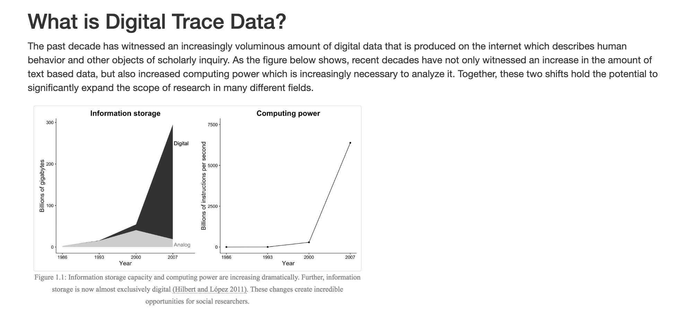
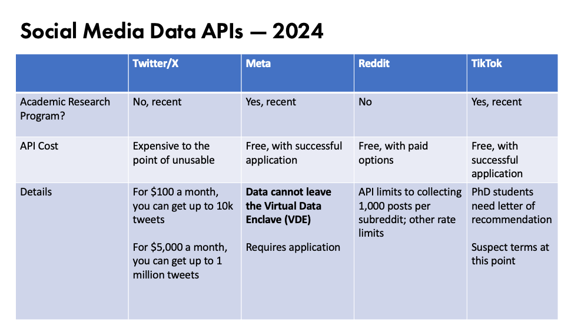

Terms & Traps
How do we ethically and legally work with culture as data?
In-Class Agenda
Assigned Materials
- Walsh, Melanie. “Where Is All the Book Data?” Public Books, October 4, 2022. https://www.publicbooks.org/where-is-all-the-book-data/.
- McNulty, Tess. “What’s on Top of TikTok?” Public Books, November 8, 2023. https://www.publicbooks.org/whats-on-top-of-tiktok/.
- Sheth, Anna Preus and Aashna. “Top 500 ‘Greatest’ Novels (1021-2015) - Responsible Datasets in Context.” Responsible Datasets in Context, July 1, 2024. https://www.responsible-datasets-in-context.com/posts/top-500-novels/top-500-novels.html.
Additional Materials
- Lavigne, Sam. “Scrapism: A Manifesto.” Critical AI 1, no. 1-2 (October 1, 2023). https://doi.org/10.1215/2834703X-10734046.
Additional Links
Links Related to Platforms Data & Recommendation Systems
- Staley, Willy. “How Everyone Got Lost in Netflix’s Endless Library.” The New York Times, October 7, 2024, sec. Magazine. https://www.nytimes.com/2024/10/07/magazine/netflix-library-viewer-numbers.html.
This article details the challenges and complexities of navigating Netflix’s vast library of content. The author writes,
“In December of last year, Netflix provided an unprecedented map of its library by releasing a comprehensive look at its viewer data for the very first time. It comes as an Excel file, less than a megabyte, and ranks 18,214 pieces of content in Netflix’s gargantuan library by the number of hours viewed during the first six months of 2023, rounded to the nearest 100,000. In fact, this rounding means that it doesn’t even capture the entirety of the thing, because Netflix excluded titles with fewer than 50,000 viewer hours.”
You can access this data here https://about.netflix.com/en/news/what-we-watched-a-netflix-engagement-report.

- Narayanan, Arvind. “TikTok’s Secret Sauce.” Kinght First Amendment Insitute at Columbia University (blog), December 15, 2022. http://knightcolumbia.org/blog/tiktoks-secret-sauce.
This article details how TikTok’s recommendation system works. The author writes,
” What made TikTok such a success? A commonly given reason is that the app’s advanced AI is really good at figuring out what you want to watch. Many people say TikTok knows them better than they know themselves. Some users think of the algorithm as a divine force that guides them.
I’m not here to question people’s lived experience of TikTok. But there’s no truth to the idea that TikTok’s algorithm is more advanced than its peers. From everything we know–TikTok’s own description, leaked documents, studies, and reverse engineering efforts–it’s a standard recommender system of the kind that every major social media platform uses. Besides, recommender systems are a topic of furious research in computer science, and it would be implausible for TikTok engineers to have made a breakthrough that no one else knows about. Companies stay at the cutting edge by having their researchers and engineers participate in the open culture of knowledge sharing at conferences such as RecSys. A company walling itself off will only get left behind. For all these reasons, I don’t believe TikTok’s algorithm is its secret sauce.
Why, then, does TikTok’s algorithm feel so different? The answer has nothing to do with the algorithm itself: It’s all about the design.”

- Valentino-DeVries, Jennifer, Natasha Singer, Michael H. Keller, and Aaron Krolik. “Your Apps Know Where You Were Last Night, and They’re Not Keeping It Secret.” The New York Times, December 10, 2018, sec. Business. https://www.nytimes.com/interactive/2018/12/10/business/location-data-privacy-apps.html.
This article details how apps on your phone are tracking your location data and selling it to third parties. The authors write,
“At least 75 companies receive anonymous, precise location data from apps whose users enable location services to get local news and weather or other information, The Times found. Several of those businesses claim to track up to 200 million mobile devices in the United States – about half those in use last year. The database reviewed by The Times – a sample of information gathered in 2017 and held by one company – reveals people’s travels in startling detail, accurate to within a few yards and in some cases updated more than 14,000 times a day.”

See more at https://sicss.io/2020/materials/day2-digital-trace-data/strengths-weaknesses/rmarkdown/Strengths_and_Weaknesses.html.
Links Related to Copyright Regulations & Cases

Fair use is a legal doctrine that promotes freedom of expression by permitting the unlicensed use of copyright-protected works in certain circumstances. Section 107 of the Copyright Act provides the statutory framework for determining whether something is a fair use and establishes four factors to consider when determining whether a particular use is fair. These factors include the purpose and character of the use, the nature of the copyrighted work, the amount and substantiality of the portion used in relation to the copyrighted work as a whole, and the effect of the use upon the potential market for or value of the copyrighted work. Here’s another helpful infographic for determining if something constitutes fair use
{kind=link}

- Non-Consumptive Fair Use https://www.hathitrust.org/the-collection/terms-conditions/non-consumptive-use-policy/
Non-consumptive use is a type of fair use that allows researchers to analyze copyrighted works without consuming or replacing the original work. This type of use is often used in digital humanities research, where scholars analyze large datasets of copyrighted works to identify trends, patterns, and other insights. Non-consumptive use is considered fair use because it does not compete with the original work or replace the need for the original work. Instead, it provides new insights and knowledge that can benefit society as a whole. The right to non-consumptive use was the outcome of a lawsuit between the Authors Guild and Google over the Google Books project, which digitized millions of books for research purposes.

- Althaus, Scott, David Bamman, Sara Benson, Brandon Butler, Beth Cate, Kyle K. Courtney, Sean Flynn, et al. Building Legal Literacies for Text Data Mining. University of California, Berkeley, 2021. https://doi.org/10.48451/S1159P.
This is a book that provides an overview of the legal issues surrounding text data mining, including copyright, fair use, and licensing. The book covers topics such as the legal status of text data mining, the legal risks of text data mining, and the legal tools available to researchers. The above map details the copyright restrictions on text data mining in different countries, showing the varying legal landscapes that researchers must navigate when conducting text data mining projects. I would highly recommend this book to anyone considering using potentially copyrighted materials in their research.

- Creative Commons License https://creativecommons.org/share-your-work/
The creative commons licenses are a set of licenses that allow creators to share their work with others. These licenses are often used in digital humanities projects to share data and code. You can learn more about the different types of licenses and how they work at the link above.

The General Data Protection Regulation (GDPR) is a regulation in EU law on data protection and privacy in the European Union and the European Economic Area. It also addresses the transfer of personal data outside the EU and EEA areas. The GDPR aims primarily to give control to individuals over their personal data and to simplify the regulatory environment for international business by unifying the regulation within the EU. It was passed in 2016 and went into effect in 2018, and has had a significant impact on how data is collected, stored, and used online.
- Bode, Karl. “Court Rules That ‘Scraping’ Public Website Data Isn’t Hacking.” Vice (blog), September 11, 2019. https://www.vice.com/en/article/9kek83/linkedin-data-scraping-lawsuit-shot-down.
This article details a ruling from the Ninth Circuit Court of Appeals determined that scraping publicly available data from websites does not constitute “hacking” under the Computer Fraud and Abuse Act (CFAA) in 2019. This decision arose from a dispute between HiQ Labs, a data analytics firm, and LinkedIn. HiQ Labs scrapes publicly viewable LinkedIn profiles, combines this data with other sources, and sells the information to employers. LinkedIn argued that this practice violated the CFAA, which criminalizes unauthorized computer access.
The court rejected LinkedIn’s claim, stating that scraping public data does not bypass any meaningful authorization mechanisms, like passwords, which the CFAA would require to deem an act as hacking. The CFAA, enacted in 1986, is often used by corporations and prosecutors in cases not directly related to hacking, leading to widespread debate over what qualifies as “authorization.”
This decision was seen as a positive step by advocates like the Electronic Frontier Foundation https://www.eff.org/, which argues that public data scraping supports research and other beneficial uses. However, it also raises questions about the boundaries of data privacy and the rights of companies to control their online information. As data scraping becomes more common and sophisticated, legal disputes over data access and ownership are likely to continue.
- Lomas, Natasha. “Social Media Giants Urged to Tackle Data-Scraping Privacy Risks.” TechCrunch (blog), August 24, 2023. https://techcrunch.com/2023/08/24/data-scraping-privacy-risks-joint-statement/.
This article details the release of a joint statement from privacy regulators in twelve countries, including the U.K., Canada, and Hong Kong, urging major social media platforms to protect users’ public posts from data scraping. In the statement, the regulators emphasized that public data is still subject to privacy laws in most jurisdictions, holding platforms like Facebook, TikTok, and LinkedIn legally responsible for preventing unauthorized scraping. You can read the actual statement here https://ico.org.uk/media/about-the-ico/documents/4026232/joint-statement-data-scraping-202308.pdf.
The statement outlines risks such as identity fraud, targeted cyberattacks, and unauthorized surveillance as potential consequences of scraping. Though AI isn’t explicitly mentioned, the article suggests a connection to growing concerns over generative AI models, which often use scraped data for training.
The regulators recommend that platforms implement measures like CAPTCHAs and rate limiting to curb scraping, and also encourages users to be mindful of their online presence, advising them to manage privacy settings and consider long-term data impacts.
- Knibbs, Kate. “The Internet Archive Loses Its Appeal of a Major Copyright Case” Wired, September 4, 2024. https://www.wired.com/story/internet-archive-loses-hachette-books-case-appeal/.
This article details how the Internet Archive recently faced a major setback when the US Court of Appeals for the Second Circuit upheld an earlier ruling against the nonprofit in the Hachette v. Internet Archive case. The court ruled that the Archive’s digital book lending practices, particularly its National Emergency Library (NEL) program, violated copyright law. This decision rejected the Archive’s argument that their practices were protected under the fair use doctrine.
The NEL was launched in response to the COVID-19 pandemic, allowing users to borrow scanned books without the usual one-copy-per-reader restriction. Although this service was quickly halted after backlash from authors and publishers, the Archive was sued by major publishing houses. Courts have since determined that the Archive’s actions weren’t “transformative,” and thus didn’t qualify for fair use protections.
While the ruling acknowledged the Internet Archive as a nonprofit rather than a commercial entity, it stressed that converting books into digital formats without permission infringes on copyright. This decision is viewed as a victory for publishers, emphasizing their rights to control digital distribution and enforce copyright.
The Internet Archive, which also faces a similar lawsuit from music labels, expressed disappointment but remains committed to defending the rights of libraries. Critics of the ruling argue that it favors large publishers at the expense of researchers, authors, and readers who benefit from expanded digital access. With ongoing legal battles and potential damages, this case represents a critical moment for copyright law, particularly as similar fair use disputes arise in the context of AI and digital content preservation. It remains unclear how this ruling will impact the Archive’s future operations and the broader landscape of digital libraries.
Links Related to Accessing Platform Digital Trace Data

This chart was provided by Prof. Melanie Walsh https://ischool.uw.edu/people/faculty/profile/melwalsh. Many thanks for being so generous!
- Also highly recommend her new chapter Walsh, Melanie. “The Challenges and Possibilities of Social Media Data: New Directions in Literary Studies and the Digital Humanities.” In Debates in the Digital Humanities 2023, edited by Matthew K. Gold and Lauren F. Klein, 275-94. University of Minnesota Press, 2023. Available online here. In the chapter, she outlines three principles for working with social media data:
- Strive for community engagement through publicity and communications
- Explicit consent for citations and avoid linking to materials that are sensitive or not prominent
- Sharing data that allow for the right to be forgotten and with varying access levels
This provides an overview of the Meta Academic API, which allows researchers to access public data from Facebook, Instagram, and other Meta platforms. You will likely need to apply for access to the API, so if you want to use this data you should start the process as soon as possible.
The Social Media Archive (SOMAR) is a new project out of the Inter-university Consortium for Political and Social Research (ICPSR) at the University of Michigan Institute for Social Research (ISR).
Documenting the Now is a project that is focused on archiving social media data. They have a number of tools and resources that can help you archive and analyze social media data. Particularly, I would recommend taking a look at their twarc tool https://github.com/DocNow/twarc?tab=readme-ov-file, which is intended to help access and archive Twitter data.
- Stijn Peeters, Zeeschuimer https://github.com/digitalmethodsinitiative/zeeschuimer?tab=readme-ov-file
“Zeeschuimer is a browser extension that monitors internet traffic while you are browsing a social media site, and collects data about the items you see in a platform’s web interface for later systematic analysis. Its target audience is researchers who wish to systematically study content on social media platforms that resist conventional scraping or API-based data collection.”